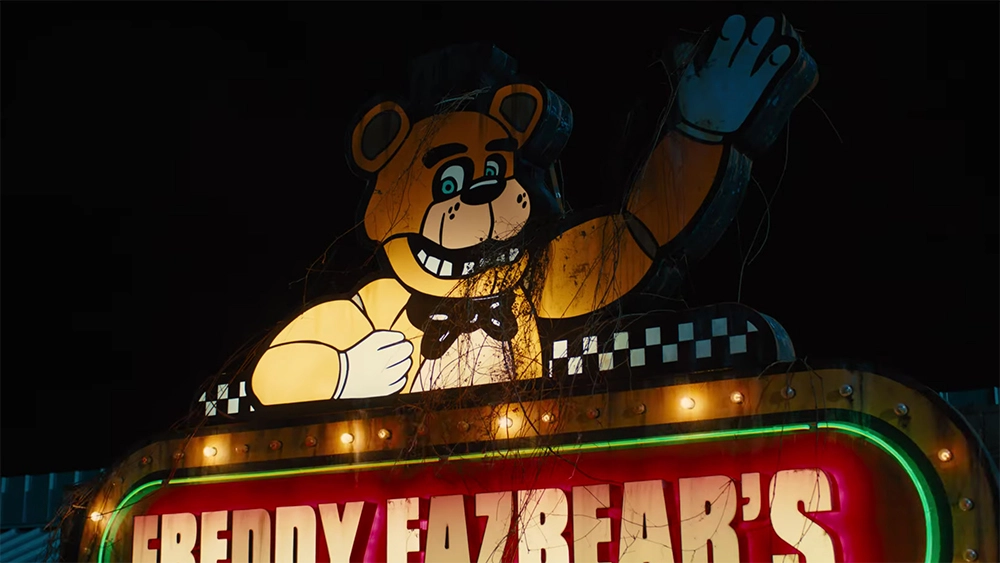
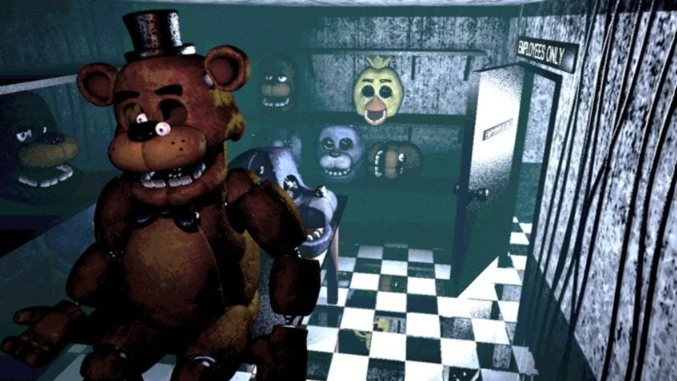

FIVE NIGHTS AT FREDDY'S
Recorded Message - Night 1
by Phone Guy • Aug 8, 2014
Hello? Hello, hello? Uh, I wanted to record a message for you to help you get settled in on your first night. Um, I actually worked in that office before you. I'm finishing up my last week now, as a matter of fact. So, I know it can be a bit overwhelming, but I'm here to tell you there's nothing to worry about. Uh, you'll do fine. So, let's just focus on getting you through your first week. Okay? Uh, let's see, first there's an introductory greeting from the company that I'm supposed to read. Uh, it's kind of a legal thing, you know. Um, "Welcome to Freddy Fazbear's Pizza. A magical place for kids and grown-ups alike, where fantasy and fun come to life. Fazbear Entertainment is not responsible for damage to property or person. Upon discovering that damage or death has occurred, a missing person report will be filed within 90 days, or as soon property and premises have been thoroughly cleaned and bleached, and the carpets have been replaced." Blah, blah, blah. Now that might sound bad, I know, but there's really nothing to worry about. Uh, the animatronic characters here do get a bit quirky at night, but do I blame them? No. If I were forced to sing those same stupid songs for twenty years and I never got a bath? I'd probably be a bit irritable at night too.
So, remember, these characters hold a special place in the hearts of children and we need to show them a little respect, right? Okay. So, just be aware, the characters do tend to wander a bit. Uh, they're left in some kind of free roaming mode at night. Uh... Something about their servos locking up if they get turned off for too long. Uh, they used to be allowed to walk around during the day too. But then there was The Bite of '87... Yeah. I-It's amazing what the human body can do without the frontal lobe, you know? Uh, now concerning your safety, the only real risk to you as a night watchman here, if any, is the fact that these characters, uh, if they happen to see you after hours probably won't recognize you as a person. They'll pr- they'll most likely see you as a metal endoskeleton without its costume on. Now since that's against the rules here at Freddy Fazbear's Pizza, they'll probably try to... forcefully stuff you inside a Freddy Fazbear suit.
Um, now, that wouldn't be so bad if the suits themselves weren't filled with crossbeams, wires, and animatronic devices, especially around the facial area. So, you could imagine how having your head forcefully pressed inside one of those could cause a bit of discomfort... and death. Uh, the only parts of you that would likely see the light of day again would be your eyeballs and teeth when they pop out the front of the mask, heh. Y-Yeah, they don't tell you these things when you sign up. But hey, first day should be a breeze. I'll chat with you tomorrow. Uh, check those cameras, and remember to close the doors only if absolutely necessary. Gotta conserve power. Alright, good night.